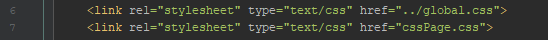
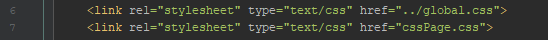

Cascading Style Sheets bruges til at style et HTML dokument.
CSS syntax består af en selector og en deklaration der indeholder en egenskab og en værdi
Der linkes til CSS filen på HTML siden med et link tag, og sti'en til CSS filen i href attributen
Med # som selector prefix kan man tilgå elementer med en id attribut
Med . som selector prefix kan man tilgå elementer med en class attribut
 
